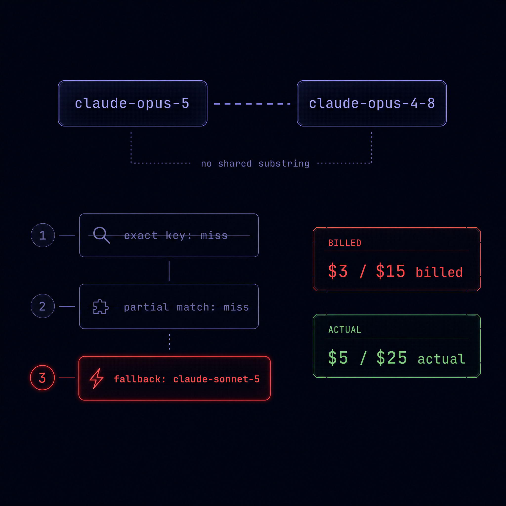
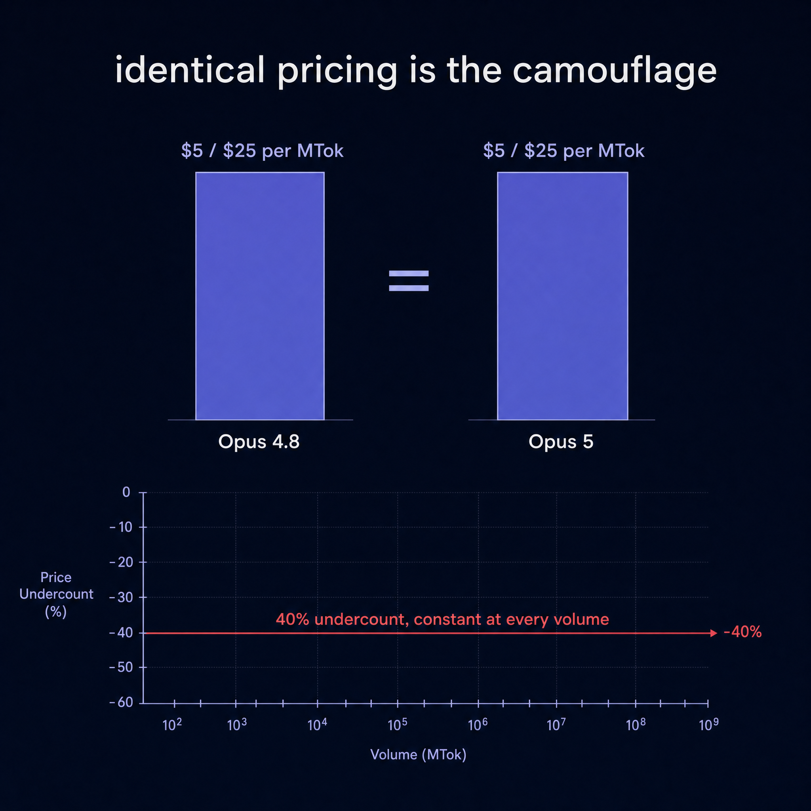
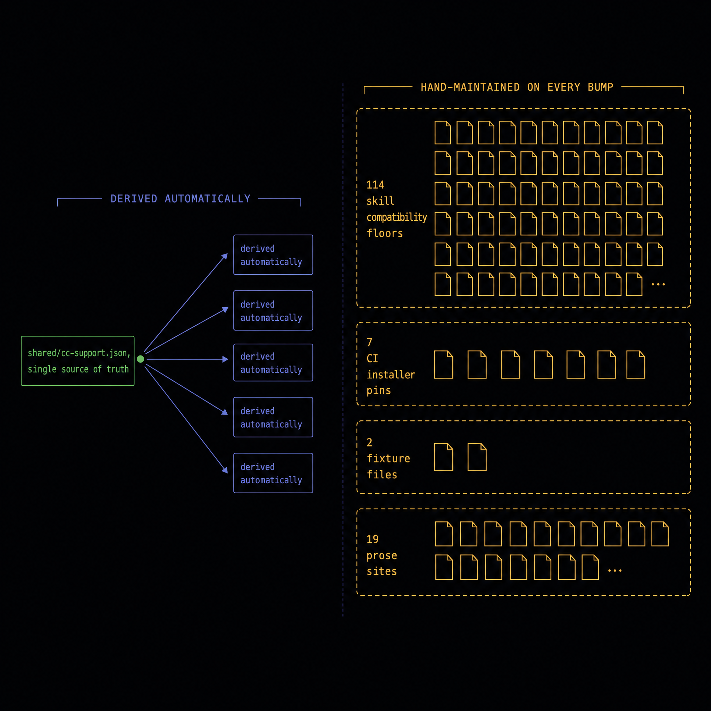

Opus 5 shipped mispriced, and identical pricing is what hid it.
CC 2.1.219 made claude-opus-5 the default Opus model. OrchestKit's model
vocabulary had no entry for it, so the cost estimator's substring fallback quietly priced
every Opus 5 session at Sonnet rates. Opus 5 and Opus 4.8 cost the same, so no total
moved and no report looked wrong. Explore the resolver below.
01 The resolver, step by step
getPricing() tries an exact key, then a substring partial match, then falls back
to Sonnet. Pick a model ID and watch which branch wins. Toggle the vocab to see the
difference the claude-opus-5 entry makes.
02 What the undercount was worth
Opus 5 truth is $5 / $25 per MTok. The Sonnet fallback billed $3 / $15. Drag to a plausible monthly volume for an agentic workload and read the gap.
The undercount is a flat 40% regardless of volume, because both rates scale linearly. That is precisely why no anomaly detector would have caught it.
03 The test that was missing
The suite pinned the pricing table and pinned the unknown-model fallback. Nothing asserted the thing in between: that a model OrchestKit actually supports never reaches that fallback.
| existing canary | covers |
|---|---|
| every pricing entry has correct values | table |
| unknown models fall back to Sonnet | fallback |
| every pricing key resolves to itself | identity |
| no fullIds model hits the fallback | was absent |
$ remove pricing['claude-opus-5'], re-run AssertionError: claude-opus-5 priced off-tier: expected 3 to be 5 Tests 4 failed | 7 passed (11)
A guardrail that cannot fail is theater, so the new canary was verified by actually breaking it.
04 The floor bump is a cascade
stamp-cc-support.mjs derives five files from one source of truth. It covered
well under half of what the bump actually touched. The rest had to be found by hand,
which is the interesting part.
| surface | count | stamped? | consequence if missed |
|---|---|---|---|
| CLAUDE.md, matrix constants, doctor ref, docs-site, README | 5 | yes | — |
SKILL.md compatibility: floors | 114 | no | hard CI failure; SKILL_COMPAT_STRICT defaults to 1 |
CI installer pins claude-code@2.1.206 | 7 | no | CI keeps installing a below-floor CC |
.latest fixture coupling | 2 | no | release-watch recovery test finds no matching entry |
| floor prose in source and docs | 19 | no | false statements about the supported window |
The 114 are now stamped automatically. Of them, 83 carry only the floor and
31 also state real dependencies (memory MCP server, gh CLI, network access,
agent-browser >= 0.25.0). A blanket delete would have destroyed the second
group, so only the version substring is rewritten.
05 Class A vs Class B
Not every 2.1.206 in the tree is a floor claim. A blanket find-and-replace
would have falsified history. The substitution was gated on floor-claim phrasing.
"our floor is 2.1.206" "We floor at `2.1.206`" "at ork's floor (2.1.206)"
| EnterWorktree confirmation | 2.1.206 | "**CC 2.1.206 —** external-worktree…" "58 releases below the then-current 2.1.206 floor"
06 Four inherited claims that did not survive
From the 2026-07-23 audit. Recorded rather than quietly dropped, because acting on them would have produced wrong work.
| claim | verdict | what is actually true |
|---|---|---|
| nested spawning is off by default; Pattern 9 degrades to a no-op | stale | true of 2.1.217. 2.1.219 restored depth 3, so Pattern 9 is correct again |
| the 500-line SKILL.md limit has no enforcing test | refuted | test-skill-length.sh enforces 520. Real defect: implement at 517, and CONTRIBUTING still says 500 |
manifests/ork.json derives the floor via the stamp script |
refuted | it has no CC version field at all, and never did |
the floor in engines.claudeCode guarantees the fix |
refuted | package.json has no such field. 3 sites now cite cc-support.json |
07 A test that dirtied 114 files
Adding a sixth stamp target silently broke a test's isolation, in exactly the way that test's own header warned about.
test-cc-support-stamper.sh drives the stamper with fixture floors (2.1.999) to prove propagation. It snapshots every stamp target and restores on EXIT. Its header, written after README.md was once missed: "Every stamp target must be snapshotted, or a bumped-floor test run leaves fixture values (2.1.999) in the working tree" target #6 added → 114 SKILL.md left at 2.1.999 → next test: "stamper not idempotent — 114 pending mutation(s)" Restore is a byte-exact file copy, not a line rewrite: 7 of the 114 SKILL.md files have NO trailing newline, and an awk/sed replay silently adds one → 7 spuriously dirty files.
08 Generated explainers
Every figure below was checked against models.vocab.json before being kept.
The first infographic pass was discarded because it rendered the fallback price as
$3 / $25, propagating a typo from its own generation prompt. A wrong number in
a deliverable is worse than the cost of regenerating, so it was regenerated.


